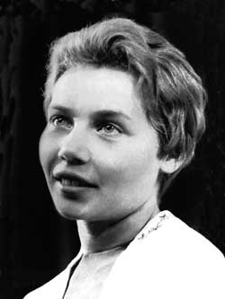

Elena Volchetskaya (USSR)
1964 Olympic Team Gold Medalist

Medal Total
Olympic Games: 1 Gold
Elena was born December 4, 1943 in Grodno (Belarus). Her first coach was Nikolai Tretyak, who handed her over to Renald Knysh when she was 13 years old. She retired from competitive gymnastics in 1965 and became a children's coach alongside Knysh. One of her students was Olga Korbut. Elena eventually left the gym for the classroom, and became a professor at Grodno State University's Faculty of Physical Culture. Both of her daughters, Tatiana and Irina, were gymnasts.
Competition Results
1960
Jr. USSR Championships: 3rd AA
1961
USSR Championships: 6th AA, 1st V
USSR Cup: 3rd AA, 1st V, 5th B
1962
USSR Championships: 2nd AA
USSR Cup: 3rd AA
1963
Cup of Belarus: 1st AA, 1st V, 1st UB, 1st B, 2nd FX
USSR Spartakiad: 6th Team, 4th AA, 1st B, 2nd V, 5th UB
1964
Olympic Games: 1st Team, 8th AA, 5th V
USSR Championships: 6th AA
USSR Cup: 2nd AA, 1st B, 3rd V, 6th UB, 6th FX
1965
USSR Championships: 5th Team, 12th AA
This page was created on August 2,
2009 and was last updated on September 18, 2026.
© Gymn Forum